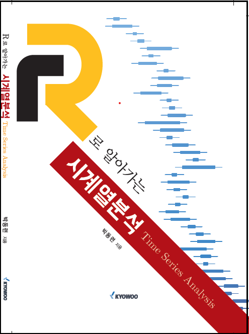
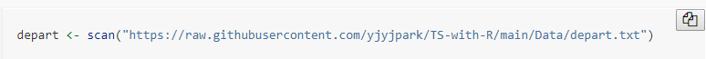

머리말

시간의 흐름에 따라 관측되는 시계열자료는 경영\(\cdot\)경제 분야 뿐 아니라 이제는 다른 많은 분야에서도 흔히 접할 수 있는 형태의 자료이다. 시계열자료의 가장 큰 특징은 자료들 사이에 강한 상관관계가 존재할 수 있다는 것인데, 이런 특징으로 인하여 선형회귀모형과 같이 자료의 독립성을 가정으로 하고 있는 모형으로는 시계열자료의 분석에 한계가 있다.
이 책에서는 시계열자료의 예측 모형으로 가장 많이 사용되는 ETS 모형과 ARIMA 모형, 그리고 ARMA 오차 회귀모형을 다루고 있으며, 특히 시계열분석에서 가장 많이 사용되는 R 패키지 중 하나인 패키지 forecast의 다양한 함수의 활용 방법을 소개하고 있다.
이 책은 교우사에서 출판한 “R로 알아가는 시계열분석”에서 사용된 실습 예제만을 추려서 독자들의 R 실습에 작은 도움이 되고자, Quarto을 사용하여 Rstudio에서 작성되었다. 또한 이 책애서는 R의 기초적인 사용법 및 패키지 tidyverse에 대한 소개 없이 사용하고 있으며, R code에는 프롬프트(> 또는 +)를 제거하였고, console 창에 출력되는 실행 결과물은 ##으로 시작되도록 하였다.
제공된 R code를 쉽게 복사하는 방법은 R code 블록에 마우스를 놓으면 아래 그림과 같이 우측 상단에 기호가 나타나는데, 그 기호를 클릭하는 것이다.

이 책을 작성할 때의 R 세션 정보는 다음과 같다.
sessionInfo()
## R version 4.2.2 (2022-10-31 ucrt)
## Platform: x86_64-w64-mingw32/x64 (64-bit)
## Running under: Windows 10 x64 (build 22621)
##
## Matrix products: default
##
## locale:
## [1] LC_COLLATE=Korean_Korea.utf8 LC_CTYPE=Korean_Korea.utf8
## [3] LC_MONETARY=Korean_Korea.utf8 LC_NUMERIC=C
## [5] LC_TIME=Korean_Korea.utf8
##
## attached base packages:
## [1] stats graphics grDevices utils datasets methods base
##
## other attached packages:
## [1] expsmooth_2.3 fma_2.5 forecast_8.21 fpp2_2.5
## [5] lubridate_1.9.2 forcats_1.0.0 stringr_1.5.0 dplyr_1.1.0
## [9] purrr_1.0.1 readr_2.1.4 tidyr_1.3.0 tibble_3.2.0
## [13] ggplot2_3.4.1 tidyverse_2.0.0
##
## loaded via a namespace (and not attached):
## [1] Rcpp_1.0.10 lattice_0.20-45 zoo_1.8-11 digest_0.6.31
## [5] lmtest_0.9-40 utf8_1.2.3 R6_2.5.1 evaluate_0.20
## [9] pillar_1.8.1 rlang_1.1.0 curl_5.0.0 rstudioapi_0.14
## [13] fracdiff_1.5-2 TTR_0.24.3 rmarkdown_2.20 htmlwidgets_1.6.1
## [17] munsell_0.5.0 compiler_4.2.2 xfun_0.37 pkgconfig_2.0.3
## [21] urca_1.3-3 htmltools_0.5.4 nnet_7.3-18 tidyselect_1.2.0
## [25] quadprog_1.5-8 fansi_1.0.4 crayon_1.5.2 tzdb_0.3.0
## [29] withr_2.5.0 grid_4.2.2 nlme_3.1-162 jsonlite_1.8.4
## [33] gtable_0.3.1 lifecycle_1.0.3 magrittr_2.0.3 scales_1.2.1
## [37] quantmod_0.4.20 cli_3.6.0 stringi_1.7.12 tseries_0.10-53
## [41] timeDate_4022.108 ellipsis_0.3.2 xts_0.13.0 generics_0.1.3
## [45] vctrs_0.5.2 tools_4.2.2 glue_1.6.2 hms_1.1.2
## [49] parallel_4.2.2 fastmap_1.1.1 yaml_2.3.7 timechange_0.2.0
## [53] colorspace_2.1-0 knitr_1.42